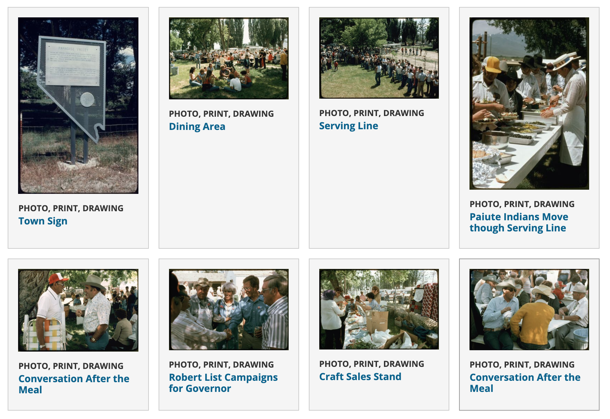
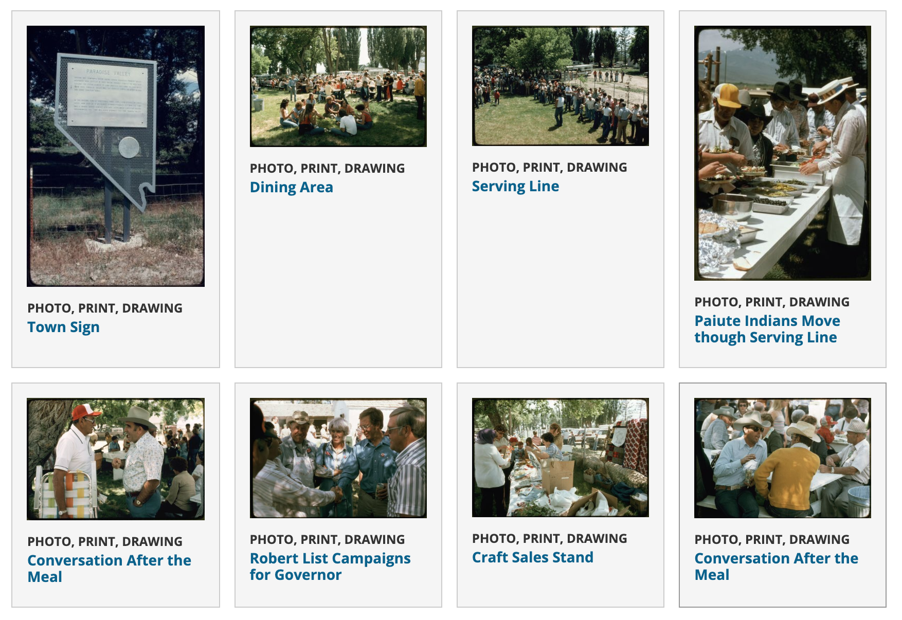
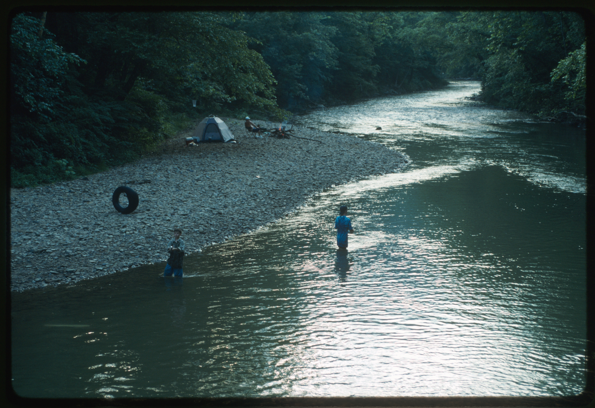
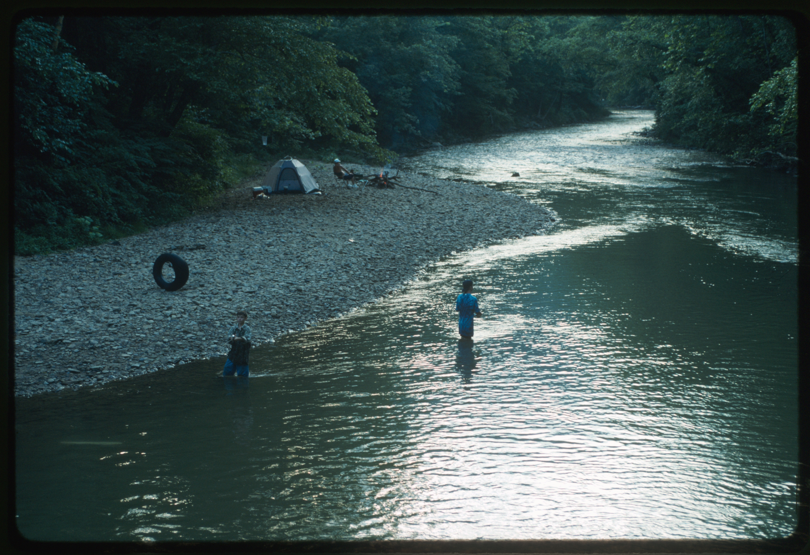

“UNOFFICIAL”
API
> Kijiji Scraper <
Webpages (Images, Text)
> Keyword: Taxidermy, Location: Ontario <


Webpages (Images, Text)
> Squirrels and Niche Comments <
Concept/Thing
RANDOM, DISCOMFORT, ANTICIPATION. ALSO THE HISTORICAL TREND OF SLAPPING-ON OF “CHINESE” TO MAKE SOMETHING MYSTICAL/BIZARRE ...UGH.
Text, Webpages
Posters? (Images, Quotes)
> Bringing Your Trophy Back to Life <
API
> Image Colorization (Deep AI) <
ACCESSIBLE REVIVAL. BUT ALSO LESS HUMAN...
...
...
“OFFICIAL”
Digital Collection (Images, Text)
> Vernay-Hopwood Chindwin Expedition (1935) <
OBJECTIFIED VS. NOT OBJECTIFIED
Webpage (Draft)
A “GONE FOREVER” KINDA SITE.
Digital Collection (Images, Text)
> American Memory (from the Library of Congress) <

 



 



...
...
> Humanizing Digital Archives <